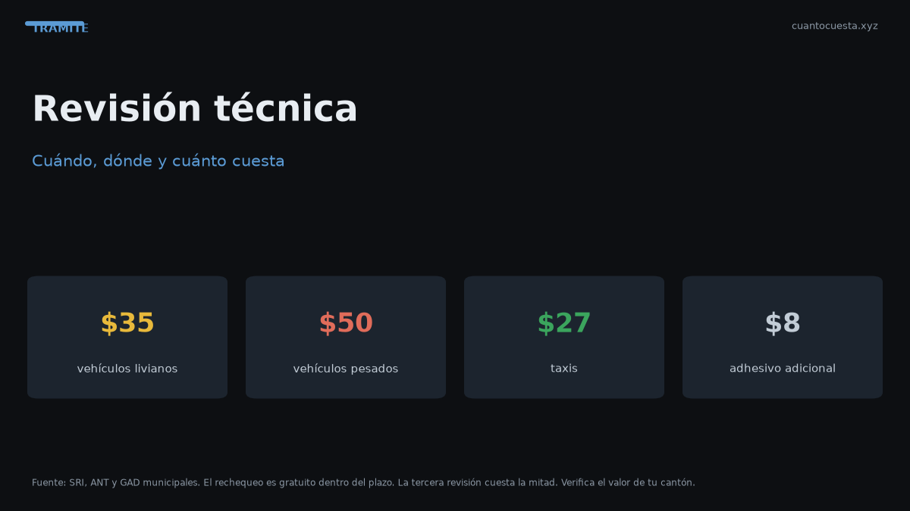

Revisión técnica vehicular en Ecuador: cuándo, dónde y cuánto cuesta
Revisión técnica vehicular en Ecuador 2026: tarifas ($35 livianos, $50 pesados, $27 taxis), sistema de rechequeo, qué revisan y multas por no asistir.

La Revisión Técnica Vehicular en Ecuador cuesta $35 para vehículos livianos, $50 para pesados y $27 para taxis. El adhesivo cuesta $8 adicionales. Se realiza una vez al año, en el mes que corresponde a tu placa, y no presentarse genera multa.
Tarifas por tipo de vehículo
| Tipo de vehículo | Tarifa |
|---|---|
| Vehículos livianos | $35,00 |
| Vehículos pesados | $50,00 |
| Taxis | $27,00 |
| Adhesivo | $8,00 adicionales |
La revisión forma parte del paquete de matrícula: se paga junto con los demás rubros. El adhesivo se suma aparte.
Cuándo te toca
La revisión se hace una vez al año, en el mismo mes asignado para tu matrícula, según el último dígito de la placa. Si el vehículo es nuevo, corresponde según las reglas de antigüedad aplicables.
No presentarse a la revisión en la fecha asignada genera multa, igual que no aprobarla. La revisión no es opcional: es requisito para circular y para completar la matrícula.
Dónde se hace
La revisión la realizan las operadoras autorizadas para la Revisión Técnica Vehicular, coordinadas por la ANT, en cada ciudad. El trámite no se hace en cualquier taller: solo en los centros habilitados.
Verifica los centros disponibles y las citas en tu ciudad por los canales de la ANT o de la operadora de tu provincia.
El sistema de rechequeo: esto te ahorra dinero
Si tu vehículo no aprueba a la primera, tienes un sistema escalonado de repeticiones:
| Intento | Costo |
|---|---|
| Primer rechequeo (dentro del plazo) | Gratis |
| Tercera revisión | La mitad de la tarifa |
| Cuarta revisión | Tarifa completa |
La clave es volver dentro del plazo. El primer rechequeo no cuesta nada; si dejas pasar los plazos o acumulas intentos, empiezas a pagar de nuevo. Reparar antes de volver evita la cuarta revisión pagada completa.
Qué revisan
La revisión verifica que el vehículo cumpla condiciones mínimas de seguridad, emisiones y estado mecánico. Los puntos típicos de control son:
- Frenos: eficiencia y balance.
- Luces: delanteras, posteriores, direccionales, alto y placa.
- Emisiones: gases según el tipo de combustible y motor.
- Neumáticos: banda de rodadura y estado.
- Dirección y suspensión.
- Carrocería y seguridad: cinturones, espejos, parabrisas.
- Documentos y datos del vehículo contra la placa.
No se califica el confort ni el aspecto estético: se califica la seguridad vial y el cumplimiento ambiental.
Por qué fallan los vehículos
Las causas más frecuentes de rechazo:
- Luces quemadas o mal alineadas, la falla más barata de corregir y la más común.
- Emisiones fuera de rango, típico en motores con mantenimiento atrasado.
- Frenos desbalanceados o con pastillas gastadas.
- Neumáticos lisos o con desgaste irregular.
- Fugas o ruidos en dirección y suspensión.
- Adhesivos o placas ilegibles.
Revisa luces, frenos y neumáticos antes de ir. Son las tres causas que más rechazos generan y las más fáciles de corregir sin gastar de más.
Multas y consecuencias
- No presentarse: multa.
- No aprobar: multa.
- Circular sin la revisión vigente: exposición a sanciones de tránsito.
La revisión aprobada se acredita con el adhesivo correspondiente, que se coloca en el vehículo.
Checklist antes de ir
Corregir lo básico antes de la cita ahorra un viaje y una multa:
- Luces: revisa que todas enciendan y estén bien alineadas.
- Frenos: sin ruidos, sin vibración al frenar.
- Neumáticos: banda de rodadura con dibujo visible.
- Placas y adhesivos: legibles.
- Documentos: matrícula y CUV a mano.
La revisión y la matrícula son el mismo paquete
La Revisión Técnica no se paga en un trámite separado del pago anual: integra los rubros de la matrícula, junto con el IPVM del SRI, el rodaje municipal, la tasa SPPAT y la tasa ANT de matriculación.
Eso significa que si apruebas la revisión, el resto del pago avanza. Si no la apruebas o no te presentas, además de la multa arrastras el cierre de la matrícula.
Preguntas frecuentes
¿Cuánto cuesta la revisión? $35 livianos, $50 pesados, $27 taxis, más $8 de adhesivo.
¿Cuándo debo hacerla? Una vez al año, en el mes de tu placa.
¿Dónde se hace? En centros autorizados coordinados por la ANT.
¿Y si no paso? El primer rechequeo es gratis dentro del plazo; el tercero cuesta la mitad y el cuarto, tarifa completa.
¿Puedo hacerla en un taller cualquiera? No: solo en operadoras autorizadas.
Qué incluye el pago anual de tu vehículo
La revisión es uno de cinco rubros que se pagan juntos cada año. Verlos en conjunto ayuda a presupuestar:
| Rubro | Entidad | Cómo se calcula |
|---|---|---|
| IPVM | SRI | 0,5% a 6% del avalúo |
| Rodaje | GAD municipal | Tarifa fija por tramo |
| SPPAT | ANT | $21,11 a $31,67 según cilindraje |
| Tasa de matriculación y servicios | ANT | Tarifa del servicio |
| Revisión Técnica Vehicular | ANT / operadora | $35, $50 o $27 según tipo |
El total promedio ronda los $180 al año; en vehículos de avalúo alto puede superar los $1.800.
El adhesivo y la circulación
El adhesivo de $8 es la constancia visible de que cumpliste la revisión: se coloca en el vehículo. Es el único comprobante que se muestra en la vía, así que no lo dejes en la guantera.
Resumen práctico
- Livianos $35, pesados $50, taxis $27; adhesivo $8 adicionales.
- Se hace una vez al año, en el mes de tu placa.
- Solo en centros autorizados, coordinados por la ANT.
- El primer rechequeo es gratis; el tercero cuesta la mitad y el cuarto, completo.
- Las fallas más comunes son luces, emisiones y frenos.
- No presentarse o no aprobar genera multa.
Las tarifas son referenciales para 2026 y pueden variar; confirma el valor y la cita con la operadora de tu ciudad.
Sigue leyendo
Calendario de matriculación en Ecuador: qué mes te toca según tu placa
La matrícula se paga según el último dígito de tu placa. Revisa qué mes te corresponde, la mult
Cambio de características del vehículo en Ecuador: color, motor y carrocería
Cambiar el color, el motor o la carrocería de tu auto exige declararlo en la ANT: cuándo es obl
Certificado Único Vehicular (CUV) en Ecuador: qué es y cómo obtenerlo
El Certificado Único Vehicular (CUV) cuesta $7,50 en Ecuador. Qué información contiene, cuándo
Cómo hacer el traspaso de dominio de un vehículo en Ecuador (paso a paso)
Traspaso de dominio en Ecuador paso a paso: los 4 pasos ante notaría y ANT, el impuesto del 1%
Duplicado de matrícula y placas en Ecuador: qué hacer si las pierdes
Perdiste o te robaron las placas: pasos, denuncia, requisitos, costos ($23 placas, $25 especie,
Cómo usamos estos datos
Las cifras de esta guía provienen de fuentes públicas oficiales y tarifarios de concesionarios publicados. Los valores son referenciales: tasas municipales, promociones y precios de repuestos varían. Verifica siempre en la entidad o concesionario antes de decidir.